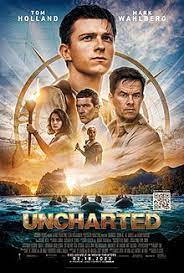

10 Things I Hate About You
A movie from 1999. 10 Things I Hate About You is an American teen romantic comedy film directed by Gil Junger and starring Julia Stiles, Heath Ledger, Joseph Gordon-Levitt, and Larisa Oleynik. The screenplay, by Karen McCullah Lutz and Kirsten Smith, is a modernization of William Shakespeare's comedy The Taming of the Shrew, retold in a late-1990s American high school setting. The film follows new student Cameron (Gordon-Levitt) who is smitten with Bianca (Oleynik) and, in order to get around her father's strict rules on dating, attempts to get bad boy Patrick (Ledger) to date Bianca's antisocial sister, Kat (Stiles). The film is named after a poem Kat writes about her romance with Patrick. Much of the filming took place in the Seattle metropolitan area, with many scenes shot at Stadium High School in Tacoma, Washington..
Mamma Mia
 A movie from 2008 A jukebox musical romantic comedy film directed by Phyllida Lloyd and written by Catherine Johnson, based on her book from the 1999 musical of the same name. The film is based on the songs of pop group ABBA, with additional music composed by ABBA member Benny Andersson. The film features an ensemble cast, including Christine Baranski, Pierce Brosnan, Dominic Cooper, Colin Firth, Amanda Seyfried, Stellan Skarsgård, Meryl Streep, and Julie Walters. The plot follows a young bride-to-be who invites three men to her upcoming wedding, with the possibility that any of them could be her father. The film was an international co-production between Germany, the United Kingdom and the United States, and was co-produced by Playtone and Littlestar Productions.
A movie from 2008 A jukebox musical romantic comedy film directed by Phyllida Lloyd and written by Catherine Johnson, based on her book from the 1999 musical of the same name. The film is based on the songs of pop group ABBA, with additional music composed by ABBA member Benny Andersson. The film features an ensemble cast, including Christine Baranski, Pierce Brosnan, Dominic Cooper, Colin Firth, Amanda Seyfried, Stellan Skarsgård, Meryl Streep, and Julie Walters. The plot follows a young bride-to-be who invites three men to her upcoming wedding, with the possibility that any of them could be her father. The film was an international co-production between Germany, the United Kingdom and the United States, and was co-produced by Playtone and Littlestar Productions.
Uncharted
A movie from 2022 Uncharted is an American action-adventure film directed by Ruben Fleischer from a screenplay by Rafe Lee Judkins, Art Marcum, and Matt Holloway, based on the video game franchise of the same name developed by Naughty Dog and published by Sony Interactive Entertainment. It stars Tom Holland as Nathan Drake and Mark Wahlberg as Victor Sullivan, with Sophia Ali, Tati Gabrielle, and Antonio Banderas in supporting roles. In the film, Drake is recruited by Sullivan in a race against corrupt billionaire Santiago Moncada (Banderas) and mercenary leader Jo Braddock (Gabrielle) to locate the fabled treasure of the Magellan expedition.